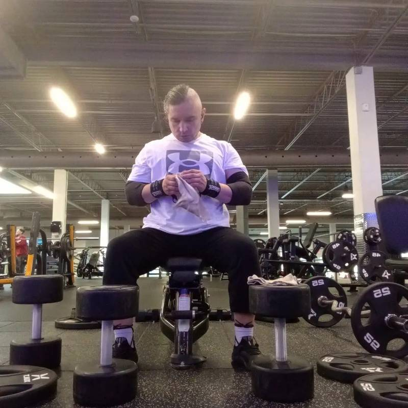

Every serious system begins twice.
Once in ambition. Once in correction. The first build of Project 100 ran on acceleration — escalating metrics, aggressive optimization. It worked. Then life happened: from 2018 to 2025, daily mechanical resistance disappeared, and structure dissolved gradually, not catastrophically. Sleep shifted. Neural stimulation moved from iron to screen.
"The Pivot occurred at 45. The data were clear: 197.1 lb total body weight, 88.2 lb skeletal muscle mass, 22.9% body fat. These numbers didn't indicate dysfunction — they indicated equilibrium. The adapted baseline of a body conditioned by reduced mechanical demand."
Documentation began in 2013. The journey itself began in 2019. The interruption spanned 2018–2025. The rebirth phase began in 2025 — and this time, it's built for permanence, not just peak performance.


